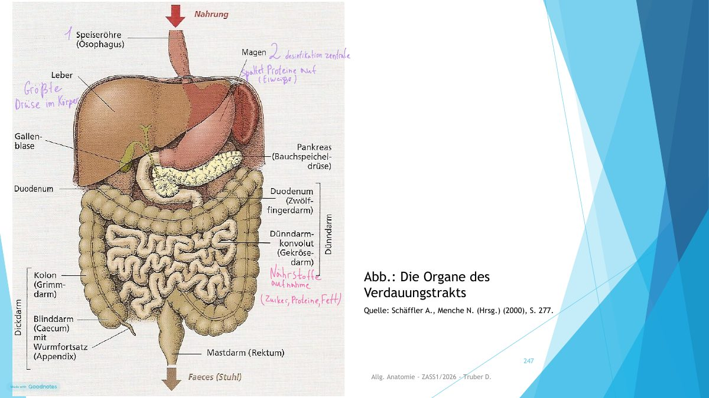

SKRIPTSEITEN 244–254
Verdauungstrakt
Weg der Nahrung
Modell wird geladen …

Das 3D-Modell ist hier nicht verfügbar. Der Lernweg und die Übungen funktionieren weiterhin.
Ziehen zum Drehen
Schematische Vorderansicht. Organe sind zur Übersicht vereinfacht; Leber, Gallenblase und Bauchspeicheldrüse liegen neben dem Weg der Nahrung.
ORGAN AUSWÄHLEN
MIT DER NAHRUNG DURCH DEN KÖRPER